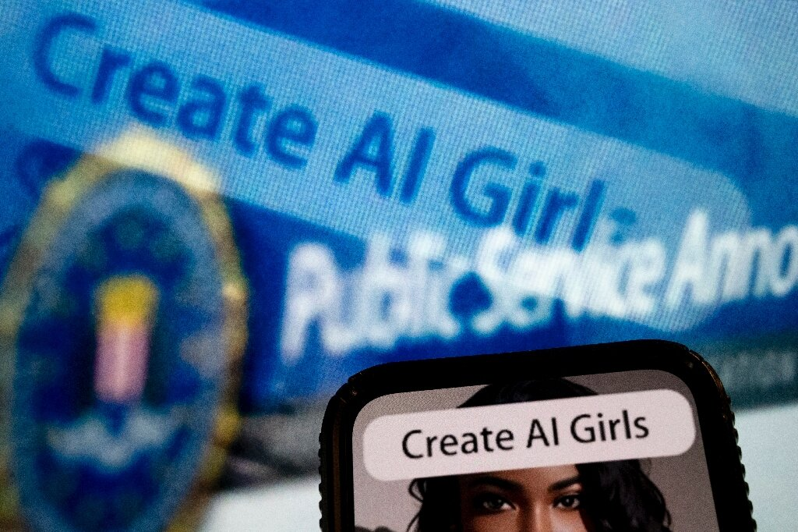

Yapay zeka çağında kadınlar deepfake pornonun yükselişiyle savaşıyor
Kadınları dijital olarak soyan fotoğraf uygulamaları, “AI kızları” yaratan cinselleştirilmiş metinden görüntüye yönlendirmeler ve “seks şiddeti” haraçlarını besleyen manipüle edilmiş görüntüler – deepfake pornodaki patlama, ABD ve Avrupa’nın teknolojiyi düzenleme çabalarını geride bırakıyor.
Yapay zeka destekli deepfake’ler genellikle Papa Francis gibi tanınmış şahsiyetlerin şişme montlu ya da Donald Trump’ın tutuklu sahte viral görüntüleriyle ilişkilendirilir, ancak uzmanlar bunların sıradan hayatları mahvedebilecek rıza dışı pornolar üretmek için daha yaygın olarak kullanıldığını söylüyor. Kadınlar, kullanıcıların fotoğraflarındaki kıyafetleri dijital olarak çıkarmalarına veya yüzlerini cinsel içerikli videolara yerleştirmelerine olanak tanıyan -genellikle ücretsiz olarak sunulan ve hiçbir teknik uzmanlık gerektirmeyen- yapay zeka araçlarının ve uygulamalarının özellikle hedefidir.

Pennsylvania Üniversitesi’nde görüntüye dayalı cinsel istismarı takip eden bir araştırmacı olan Sophie Maddocks AFP’ye yaptığı açıklamada, “Yapay zeka tarafından üretilen porno ve deepfake pornonun yükselişi, bir kadının görüntüsünün veya benzerliğinin rızası olmadan kullanılmasını normalleştiriyor. Herhangi bir kadını neredeyse soyabildiğinizde toplum olarak rıza hakkında nasıl bir mesaj veriyoruz?” dedi.
QTCinderella adını kullanan Amerikalı bir Twitch yayıncısı, ağlamaklı bir videoda deepfake porno kurbanı olduğu için kadınların “sürekli sömürülmesinden ve nesneleştirilmesinden” yakındı. Kendisini tasvir eden deepfake’lerin kopyalarını gönderen kişiler tarafından taciz edildiğini de sözlerine ekledi. Skandal Ocak ayında, aralarında QTCinderella’nın da bulunduğu çok sayıda kadının cinsel içerikli görüntülerini içeren bir web sitesine bakarken yakalanan yayıncı Brandon Ewing’in canlı yayını sırasında patlak verdi.
Çevrimiçi deepfake’lerin yaygınlaşması, itibarlara zarar verebilecek ve zorbalık veya tacize yol açabilecek yapay zeka destekli dezenformasyon tehdidinin altını çiziyor. Şarkıcı Taylor Swift ve aktris Emma Watson gibi ünlüler deepfake pornosunun kurbanı olurken, kamuoyunun gözü önünde olmayan kadınlar da hedef alınıyor. Amerikan ve Avrupa medyası, deepfake pornolarda yüzlerini görünce şok olan akademisyenlerden aktivistlere kadar kadınların birinci elden tanıklıklarıyla doludur. Hollandalı yapay zeka şirketi Sensity tarafından 2019’da yapılan bir araştırmaya göre, internetteki deepfake videoların yüzde 96’sı rıza dışı pornografi ve bunların çoğu kadınları tasvir ediyor.
Blackbird.AI‘nin istihbarat direktörü Roberta Duffield AFP’ye verdiği demeçte, “Daha önce birinin zihninde gerçekleşen özel cinsel fantezi eylemi, artık gerçek dünyadaki teknolojiye ve içerik oluşturuculara aktarılıyor. Sektörün giderek profesyonelleşmesinin yanı sıra erişim kolaylığı ve denetim eksikliği, bu teknolojileri kadınları sömürmenin ve küçültmenin yeni biçimlerine dönüştürüyor.” dedi.
Yeni metin-sanat üreticileri arasında, gerçek fotoğraflardan “hiper-gerçek yapay zekalı kızlar”-avatarlar yaratabilen ve onları “koyu ten” ve “uyluk askısı” gibi komutlarla özelleştiren ücretsiz uygulamalar da var.
Stability AI tarafından geliştirilen açık kaynaklı bir yapay zeka modeli olan Stable Diffusion gibi yeni teknolojiler, metin açıklamalarından gerçekçi görüntüler oluşturmayı mümkün hale getirdi.
Teknolojideki gelişmeler, Duffield’in yapay zeka ile geliştirilmiş porno etrafında “genişleyen bir yazlık endüstrisi” olarak adlandırdığı şeyin ortaya çıkmasına neden oldu ve birçok deepfake yaratıcısı, müşterinin seçtiği bir kişiyi içeren içerik oluşturmak için ücretli talepler alıyor.
Geçtiğimiz ay FBI, dolandırıcıların sosyal medyadan fotoğraf ve video çekerek daha sonra para sızdırmak için kullanılan “cinsel temalı” deepfake’ler oluşturdukları “sextortion planları” hakkında bir uyarı yayınladı. FBI, kurbanların arasında reşit olmayan çocukların ve rızası olmayan yetişkinlerin de bulunduğunu ekledi.
YZ marka koruma şirketi Ceartas’ın CEO’su ve kurucusu Dan Purcell AFP’ye yaptığı açıklamada, “Bu görüntülerin yaratıldığı ve paylaşıldığı yer internetin karanlık bir köşesi değil. Burnumuzun dibinde. Ve evet, yasaların buna yetişmesi gerekiyor.” dedi.
İngiltere’de hükümet, pornografik deepfake’lerin paylaşımını suç haline getirmeyi amaçlayan yeni bir Çevrimiçi Güvenlik Yasa Tasarısı önerdi.
Aralarında Kaliforniya ve Virginia’nın da bulunduğu dört ABD eyaleti deepfake porno dağıtımını yasakladı, ancak failler bu yetki alanlarının dışında yaşıyorsa mağdurlar genellikle çok az yasal başvuru hakkına sahip oluyor. Mayıs ayında ABD’li bir senatör, rıza dışı deepfake pornografi paylaşımını yasadışı hale getirecek Mahrem Görüntülerin Deepfake’ini Önleme Yasası‘nı sundu.
Reddit gibi popüler çevrimiçi alanlar da gelişmekte olan yapay zeka porno topluluklarını düzenlemeye çalıştı.
Purcell, “İnternet, sınırları olmayan bir yargı alanıdır ve insanları bu tür sömürüye karşı korumak için birleşik bir uluslararası yasaya ihtiyaç vardır” dedi.
Kaynak: AFP